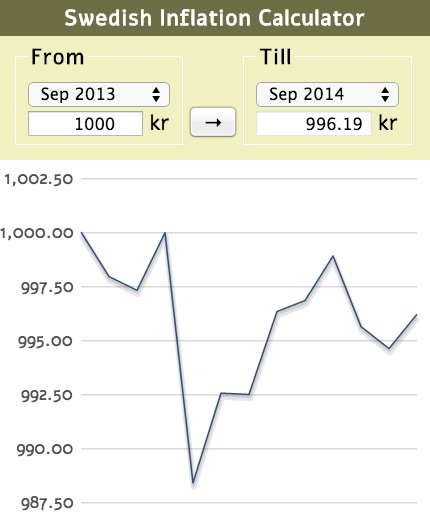
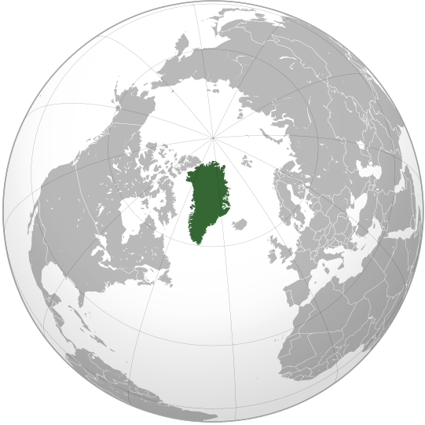
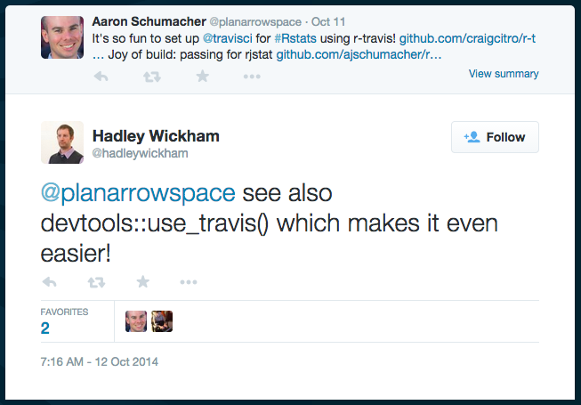
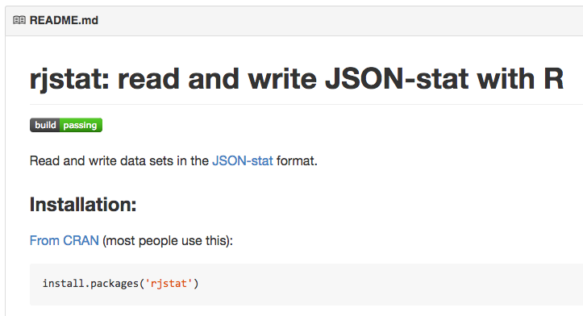

JSON-stat and rjstat
Thursday October 23, 2014
A lightning talk for Statistical Programming DC.
JSON-stat is a JSON-based data cube packaging format. rjstat is an R package for reading and writing JSON-stat.
<!doctype html>
<html>
<head>
<title>data?</title>
...About a year ago I was thinking about how to put a lot of data into a self-contained HTML document. [1] Presuming something text-based, what's the most compact way to store data?
[1] If you're interested in self-contained HTML, I have a related Python package on PyPI called selfcontain.
[{"name": "Aaron",
"year": 2014,
"height": 68,
"weight": 70},
...It's pretty common online to have an array of objects in JSON. D3 is happy to use this, for example. It's good if you need to have every observation stand on its own, or if there's no consistent schema. But you're listing keys for every record, so it isn't very compact.
name,year,height,weight
Aaron,2014,68,70
...CSV is generally much smaller, and the table layout is very familiar. There's less type information than even JSON, but we can deal. D3 is still happy to read CSV. So CSV is a good way to save bytes over JSON arrays of objects. But we're still going to repeat names and years a lot. Can we do better?
name,height2014,weight2014
Aaron,68,70
...We could change the structure of the CSV data. Moving to a wider format might save bytes, as we don't repeat the year for every record. Of course this violates the rules of tidy data and can be difficult to work with. This is not the direction we want to go.
name,year,thing,value
Aaron,2014,height,68
Aaron,2014,weight,70
...We could move in the other direction, toward a longer format. [2] Now there's only one column with values in it. We might object that the values now have presumably varying units, but we haven't been very concerned with units so far. For compactness though, we're clearly losing by duplicating names and years and things. If only there were a way to arrange the data so that nothing is repeated!
[2] For most wide-to-long and long-to-wide conversions in R, use the gather and spread functions from the tidyr package.
One solution to this problem is the data cube approach. The value "column" fills the volume of the cube. All the other columns define dimensions, and we track single copies of the dimensions. This is compact, and if you're careful you might get benefits from striding. [3]
[3] Striding benefits aren't generally accessible in JavaScript or R, but they may be in other languages.
Image (1000-pixel PNG) from Wikimedia Commons.
{kind=link}
{kind=link}
{"people stats": {
"value": [68, 70, ...],
"dimension": {
"id": ["name", "year", "thing"],
...So this is what JSON-stat looks like. There's more to it, and certainly a little bit of overhead in specifying everything in an unambiguous way, but with large data sets you can get significant savings in size. For the dimensions, it's even more effective than using R's factor approach. And that's not all.
METADATA
JSON-stat includes places for metadata like long-form names, data source, release date, element-by-element status information, and units. It also lets you naturally package multiple data sets in the same bundle. These features help make JSON-stat attractive to people who are serious about their statistics.
JSON-stat was created by Xavier Badosa as a result of his experiences doing API work for the Statistical Institute of Catalonia. He continues to maintain and promote the format, which has been growing in popularity. The biggest current systems using JSON-stat are probably Norway's and Sweden's. They rolled it out first, but offices of statistics in around 30 nations use Sweden's PC-Axis software which will soon provide JSON-stat by default. The UK's Office for National Statistics also has a new OpenAPI which provides JSON-stat. [4]
[4] The UK's system is still in beta; work continues.

In addition to the format itself there's an associated HTML microdata schema and a JavaScript Toolkit for working with JSON-stat. You can make things like this Swedish Inflation Calculator. There are also libraries for Java and Python.
...R?
But about a year ago, there was nothing for R.
I was using R a lot, so when I visited New York one weekend, I spent some of the bus ride hacking an R package together, following the advice in Advanced R. I got conversion between R data frames and JSON-stat working, I put it up on GitHub, and I told Xavier about it.
It then turned out that I didn't need JSON-stat, and I immediately forgot about it. [5] But once the package was up on GitHub, anybody could come and mess with it. And somebody did.
[5] It isn't quite true that I immediately forgot about it. I also did a lightning talk at Hack and Tell.
Image from some site.
{kind=link}
I don't know how recent this picture is. I'd really like to pronounce his name as "hack on", but by the Korean I'll go with "hoe cone". The only thing I really know about Håkon of Molde, Norway is that a couple months ago he started sending me pull requests on GitHub. Really, really good pull requests. Pull requests that made things faster, more elegant, and better tested. I'd like to buy him a reasonably priced beverage of his choice.

That was good enough until Lars Pedersen of Statistics Greenland emailed me with some questions about the package, among them when it would be on CRAN.
CRAN
rjstat was installing just fine from GitHub, and I was a little intimidated by the reputation of R-core, so all I did was start a GitHub issue to discuss getting on CRAN. Before I knew it, Håkon had submitted on my behalf, it was approved by Uwe Ligges, and it was in the system in time for Lars's conference.
I know what you're thinking: "But do you have continuous integration testing?"
Largely because I felt like I should do some work before giving this talk, I decided to set up Travis CI for rjstat. Travis doesn't actually support R at all, but Craig Citro has put together a nice way of hijacking Travis's C build process to test R projects. It was so easy, I still hardly did any work.

And because no R talk is complete without explicit mention of Hadley: he naturally let me know that his devtools package will also set up Travis automatically. Because of course it does.

In summary: JSON-stat is a neat format, everyone involved with R is really very friendly and helpful, and you should follow your dreams of doing and making all kinds of things. Thank you.